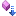

IGraphT Interface |
Wspólny interfejs ważonych grafów skierowanych i nieskierowanych.
Namespace: ASD.Graphs
Assembly: Graphs (in Graphs.dll) Version: 1.0.0.0 (1.0.0.0)
C#
public interface IGraph<T> : ICloneable, IEquatable<IGraph<T>>
Type Parameters
- T
- Typ wag krawędzi
The IGraphT type exposes the following members.
| Name | Description | |
|---|---|---|
| Directed | Informacja, czy graf jest skierowany | |
| Representation | Reprezentacja grafu | |
| VertexCount | Liczba wierzchołków grafu |
| Name | Description | |
|---|---|---|
| Clone | Creates a new object that is a copy of the current instance. (Inherited from ICloneable) | |
| Equals | Indicates whether the current object is equal to another object of the same type. (Inherited from IEquatableIGraphT) | |
| GetEdgeWeight | Zwraca wagę zadanej krawędzi | |
| HasEdge | Sprawdza, czy graf zawiera zadaną krawędź | |
| OutEdges | Wyliczenie krawędzi wychodzących z zadanego wierzchołka | |
| OutNeighbors | Wyliczenie końców krawędzi wychodzących z zadanego wierzchołka | |
| SetEdgeWeight | Zmienia wagę zadanej krawędzi |
| Name | Description | |
|---|---|---|
 | DFST |
Metoda tworzy nowy obiekt odpowiedzialny za przeszukiwanie w głąb grafu ważonego (skierowanego lub nieskierowanego)
(Defined by DFSGraphExtender) |